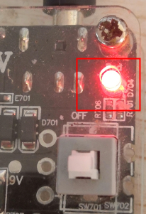
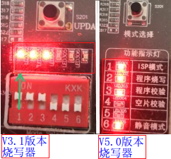
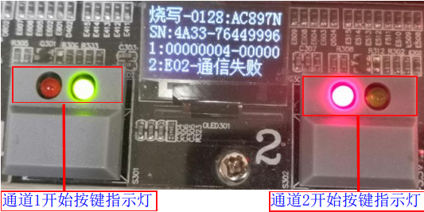
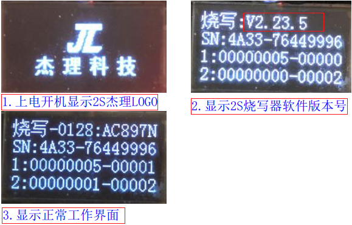
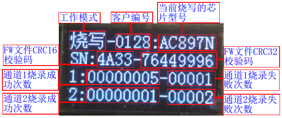

1.6. Status Indicators and Error Messages
1.6.1. LED indicators
1.6.1.1. Power indicator light
Press the latching power switch and the red power indicator light turns on. The power indicator light is shown in Power indicator light.

Power indicator light
1.6.1.2. Working mode indicator lights
The working mode indicator lights are shown in Working mode indicator lights.

Working mode indicator lights
Working mode indicator light states
No.
Working mode
LED1
LED2
LED3
LED4
LED5
LED6
1
Programming mode
On
On
On
Off
Off
/
2
Verification mode
On
Off
On
Off
Off
/
3
Blank check mode
On
Off
Off
On
Off
/
4
Sound mode
/
/
/
/
/
On
5
Mute mode
/
/
/
/
/
Off
1.6.1.3. Start button indicator lights
The Start button indicator lights are shown in Start button indicator lights

Start button indicator lights
Start button indicator light states
No.
Programming status
Green LED
Red LED
1
Normal
Off
Off
2
Programming in progress
On
Off
3
Programming succeeded
Off
Off
4
Programming failed
Off
On
1.6.2. Buzzer prompt tones
No. |
Situation |
Tone type |
Description |
|---|---|---|---|
1 |
Power-on |
1 short beep |
Programmer powered on normally |
2 |
Power-on |
2 or more beeps |
Power-on error; check the information on the display to identify the error |
3 |
During programming |
1 short beep |
Programming complete; indicates that programming succeeded |
4 |
During programming |
2 or more beeps |
Programming error; check the information on the display to identify the error |
1.6.3. OLED display
1.6.3.1. Power-on display
The display shows the Jieli logo, then the programmer version information for 2s, and then the normal screen, as shown in Power-on display.

Power-on display
1.6.3.2. Normal screen
The normal screen of the display is shown in Working screen layout.

Working screen layout
Note: the working mode is shown only on V5.0 programmers.
1.6.3.3. Programming success display
The success count of the corresponding channel on the display increases by 1 (see the channel 1 programming success count in Working screen layout).
1.6.3.4. Programming failure display
Format of the error messages shown on the display
Channel: E[error number]-[Chinese message]
For example: 1: E02-Communication failed (通信失败)
Error display
Example: if channel 1 reports "Operation timed out" (操作超时) and channel 2 reports "Communication failed" (通信失败), the display looks as shown in Error message display.

Error message display
1.6.3.5. Upgrade mode display
When you upgrade the programmer firmware or update the target chip firmware, the display shown in Display on entering upgrade mode appears after the programmer is connected to the PC over USB.
Display on entering upgrade mode
1.6.3.6. Mode setting display
On V5.0 programmers, press and hold the standalone button (see the pictures in Introduction to the programmer main unit) for 3s to enter the mode setting display, then briefly press the button to cycle through the modes (Programming - Verification - Blank check). The display is shown in Mode setting display.

Mode setting display
1.6.4. OLED error messages
The tables below describe the error messages shown on the display.
Power-on error messages:
Error code |
Error message |
Description |
|---|---|---|
No programming file (无烧写文件) |
After a remote upgrade, the programmer reports that there is no programming file when it is powered on again; |
|
No SYNC file (无SYNC文件) |
The programmer firmware does not contain the sync file for the chip selected for programming; this normally does not occur with official release firmware; |
|
E17 |
VPP error (VPP异常) |
During power-on, the 6.5V voltage output by the programmer to the top board or adapter board deviates too much; |
E30 |
ADC error (ADC错误) |
The ADC chip cs1237 of the programmer's current test module failed to initialize, so its chip ID cannot be read; |
E31 |
Memory error (内存错误) |
The programmer's EPPROM chip failed to initialize; after long use, the EPPROM chip may be damaged; |
ERR-INIT: |
no_test_config |
The PC has no configuration options at all, or there is a software bug; |
chip_name_match |
After a .key, .fw or .ufw file is updated to the programmer and the programmer is powered on again, |
|
no_file_type |
The programmer firmware failed to parse the file; |
|
file_len_min |
The file transferred from the PC is too small (less than 4 bytes); |
|
sdram_usedup |
When files such as the .fw file, authentication code files and resource files are too large and are loaded together for programming, |
|
load_to_sdram |
Failed to read the flash data into the main controller's sdram; |
|
key_mask |
The key file sent from the PC to the programmer has an incorrect format; |
|
auth_code_init |
The authentication code data has an incorrect format; |
|
efuse_bin_len |
For models such as AC702N/JL702N, the data in the efuse.bin file in the download directory exceeds 123 bytes; |
|
uplog_crc_err |
CRC error in the uplog file sent from the PC to the programmer; this normally does not occur |
|
resfile_num_over |
More than 16 resource files are configured in the .ini file in the download directory; |
|
pc_cfg_crc_err |
CRC error in the configuration data sent from the PC to the programmer; |
|
bt_addr_init |
The Bluetooth address auto-increment range configured in the PC tool is too large (more than 2^32 addresses); |
|
params_len_over |
A parameter keyword configured in the .ini file in the download directory is too long, |
|
flash_efuse_cfg |
For AC702N/JL702N, the [BURNER_PASSTHROUGH_CFG] section of the .ini file in the download directory |
|
lighting_mode |
For AC128N and AD16N, the lighting_mode parameter configured in the .ini file in the download directory has an incorrect format |
|
lighting2typec |
For AC128N and AD16N, the lighting2typec parameter configured in the .ini file in the download directory has an incorrect format |
|
lighting_ot |
For AC128N and AD16N, the lighting_ot parameter configured in the .ini file in the download directory has an incorrect format |
|
flash_do_reset |
For AC128N and AD16N, the flash_do_reset parameter configured in the .ini file in the download directory has an incorrect format |
|
sfc_boot |
For AC128N and AD16N, the sfc_boot parameter configured in the .ini file in the download directory has an incorrect format |
|
otp_boot |
For AC128N and AD16N, the otp_boot parameter configured in the .ini file in the download directory has an incorrect format |
|
bflt_len_over |
Multi-algorithm authorization: the data length of the bflt file sent from the PC to the programmer exceeds 8k; |
|
bflt_num_err |
Multi-algorithm authorization: the number of bflt files sent from the PC to the programmer is wrong (more than 32); |
|
flash_wp_cfg |
Error in the FLASH_WRITE_PROTECT =YES/NO setting in the [BURNER_PASSTHROUGH_CFG] section of the .ini file in the download directory; |
|
init_err_default |
Initialization error in other cases; |
|
init_errcode:X |
Initialization error in other cases, where X is the corresponding error code; |
Programming error messages:
Error code |
Error message |
Description |
|---|---|---|
E00 |
Blank (空片) |
In Blank check mode, indicates that the chip has never been programmed with firmware, KEY or other data |
E02 |
Communication failed (通信失败) |
When chip programming is started manually or automatically, the programmer fails to communicate with the target chip; |
E03 |
Flash data verification failures |
|
Verification failed (校验失败) |
The programmer is in Verification mode: the firmware data of the .fw file updated to the programmer does not match the firmware data |
|
res_verify |
Verification of the resource files failed, either after they were programmed or in Verification mode; |
|
mac_verify |
Verification of the Bluetooth address after programming failed; |
|
auco_vy |
Verification of the authentication code data after programming failed; |
|
wp_verify |
Verification of the flash protection parameters failed, either after they were programmed or in Verification mode; |
|
lrc_verify |
Verification of the LRC calibration value stored in the FLASH VTOP area failed after it was written; this error normally does not occur |
|
E04 |
Key operation failures |
|
forbid-nil |
In the user mode of programming-level authorization mode, programming blank chips is not allowed; |
|
forbidrkey |
In programming-level authorization mode, the rkey part must match; |
|
forbid-key |
In programming-level authorization mode, the key already in the chip differs from the key to be programmed, so programming is prohibited |
|
key_file |
Error in the key file data; this problem normally does not occur |
|
Key error (key错误) |
During a second programming in Programming mode, the chip key is not blank, overwriting is not supported, and the keys do not match; |
|
key_write |
Key verification after programming the key failed; |
|
key_verify |
In Verification mode, the key of the fw file does not match the key originally programmed into the chip; |
|
key_diff |
When programming the lkey on AC128N or AD16N, the rkey read back does not match the lkey, |
|
l3key_diff |
When verifying the lkey on AC128N or AD16N, the lkey of the fw file does not match the lkey originally programmed into the chip; |
|
l3key_error |
When programming the lkey on AC128N or AD16N, the lkey read from the chip does not match the lkey of the fw file; |
|
r3key_error |
When verifying the rkey on AC128N or AD16N, the rkey read from the chip does not match the deployed rkey; |
|
l3key_nblank |
When programming the rkey on AC128N or AD16N, the lkey read from the chip is not blank; |
|
r3key_nblank |
When programming the rkey on AC128N or AD16N, the rkey read from the chip is not blank and does not match the deployed rkey; |
|
E05 |
File failed (文件失败) |
The programmer cannot obtain the 256/4096-aligned firmware file data sent from the PC; this error normally does not occur |
E07 |
Chip test item failures, etc. |
If the failure rate is low and the failure reproduces consistently on repeated programming tests, treat the chip as defective; if the failure rate is too high, report it to Jieli technical support promptly |
sfc_test |
sfc test item failed: the flash data is read at high speed through the SFC module to screen out chips that fail verification at a specific frequency |
|
rx_test |
rx test item failed: tests the chip's LNA current to screen out chips with damaged transistors inside the LNA; |
|
btpll |
btpll test item failed: tests whether the local oscillator frequency (carrier) generated by the local oscillator is correct, |
|
ram_test |
ram test item failed: used to screen out chips with an abnormal RAM module, which fail to boot or boot abnormally |
|
eq_ram |
ram test item failed: used to screen out chips with an abnormal eq_ram module, which show read/write errors in the eq_ram module |
|
iqtrim |
iqtrim test item failed: tests whether the chip's transmit-to-receive path works properly, screening out chips with abnormal transmit/receive paths |
|
loop_back |
loop_back test item failed: screens out chips with abnormal LNA/PA current, a damaged BTPLL that loses lock, or other Bluetooth-related faults |
|
dacvdd |
dacvdd test item failed: screens out chips with abnormal dacvdd caused by mixed materials during packaging |
|
umdc |
umdc test item failed: tested together with LOOP_BACK to screen out chips whose Bluetooth parameters do not meet the requirements |
|
dac |
dac test item failed: tests the various voltages of the DAC module to screen out chips whose DAC parameters do not meet the requirements |
|
ighg |
ighg test item failed: used to screen out chips whose Bluetooth performance parameters do not meet the requirements |
|
fdiv |
fdiv test item failed: used to screen out chips with an abnormal floating-point divider |
|
io_test |
io test item failed: used to screen out chips at risk of crossed bonding wires, i.e. chips with abnormal IO |
|
dc_err |
DC test item failed: used to screen out chips with abnormal LDO levels in the DCVDD power domain |
|
btdc_sp |
DC test item failed: used to screen out chips with abnormal LDO levels or an abnormal ADC in the DCVDD power domain |
|
btdc_auadc |
btdc test item failed: used to screen out chips with an abnormal audio ADC module in the DCVDD power domain |
|
bias_err |
bias test item failed: tests the LNA_BIAS voltage difference to screen out chips whose Bluetooth parameters do not meet the specifications |
|
rom_240m |
rom test item failed: tests ROM data reads and writes under conditions such as a 240M system clock, |
|
ftmax_240m |
ftmax test item failed: tests whether the ftmax module works properly, |
|
osc_adet_U |
Crystal amplitude test item failed: tests the crystal oscillation amplitude characteristics; the chip failed the crystal amplitude test item |
|
otp_blank |
The OTP of this chip has already been programmed with data; the chip is not blank |
|
lrc_trim |
The chip's LRC clock deviation is too large; contact Jieli for further analysis |
|
otp_verify |
Chip OTP data verification error. Possible causes: |
|
otp_burn |
An error occurred while programming the chip's OTP, or data verification failed after programming |
|
burn_vol |
The chip's supply voltage deviates too much. Measure whether the chip's IOVDD and VBAT voltages are within the normal range, |
|
xxx nA |
During the soft power-off power consumption test, if the measured value is greater than the "Power consumption test" (功耗测试) limit configured when the fw file was deployed, |
|
E08 |
Programming failed |
Verification after programming the firmware data failed; |
E09 |
Operation timed out (操作超时) |
The root cause is that the programmer cannot communicate with the chip; |
uart_ot |
Timeout while reading the chip's basic information over UART. Possible causes: |
|
erase_ot |
Flash erase timeout |
|
write_ot |
Flash write timeout. Cause: abnormal UART communication between the programmer and the chip, so the chip does not receive the data to be programmed; |
|
verify_ot |
Flash verification timeout. Cause: abnormal UART communication between the programmer and the chip, so the programmer cannot obtain the verification result; |
|
ram_ot |
The program hangs during the RAM test, causing abnormal UART communication between the programmer and the chip; |
|
ictest_ot |
A test item may occasionally crash and therefore fail to respond to the programmer in time; |
|
pc_start |
When the PC controls Bluetooth address programming over an RS232 serial port, the serial communication between the PC and the programmer timed out |
|
mac_get |
When the PC controls Bluetooth address programming over an RS232 serial port, the serial communication between the PC and the programmer timed out |
|
pc_end |
When the PC controls Bluetooth address programming over an RS232 serial port, the serial communication between the PC and the programmer timed out |
|
mac_write |
When the PC controls Bluetooth address programming over an RS232 serial port, the UART communication between the programmer and the chip timed out |
|
mac_verify |
When the PC controls Bluetooth address programming over an RS232 serial port, the UART communication between the programmer and the chip timed out |
|
E10 |
Calibration error (校准异常) |
Calibration values such as the chip voltage or the LRC clock of a crystal-less design do not meet the requirements, or writing the calibration values to the storage medium failed; |
charge_cfg |
The charging current level, full-charge level or power consumption limit configured in the ini file does not meet the specifications |
|
chg_select |
The charging current level configured in the ini file cannot be calibrated into the configured current range |
|
chg_trim |
The calibrated charging current level deviates too much, by more than ±2 levels from the configured center value |
|
charge_ot |
Abnormal communication between the programmer and the chip while adjusting the charging current level |
|
E12 |
cp_fail |
Indicates a chip that has not undergone CP (wafer probe test) or that failed the CP test; |
E15 |
Wrong capacity (容量不对) |
The data size of the fw programming file is larger than the flash capacity; |
E17 |
Supply voltage errors |
|
VPP error (VPP异常) |
While the programmer supplies power to the chip, the 6.5V voltage output by the programmer to the top board or adapter board deviates too much; |
|
vddio_vol |
During programming, the chip's vddio voltage exceeds 3.8V; |
|
E18 |
Abnormal current (电流异常) |
The power-up current of the chip to be programmed exceeds the set value (50mA); |
E19 |
Function error (功能异常) |
This error is reported when the chip starts programming, verification or blank check, because the mode that is set is not one of the three working modes (programming, verification, blank check); |
E21 |
version:X |
The chip version specified by the fw file updated to the programmer (configured in the .ini file) does not match the version (X) of the chip currently being programmed; |
E24 |
read_efuse |
Timeout reading the efuse hardware storage medium, or the data read is abnormal; this error does not normally occur |
E24 |
en_act |
When programming with an LVD or expert-mode configuration, the TRUE/FALSE values configured for the first and second programming differ. |
E24 |
lvd_rst |
When programming with an LVD or expert-mode configuration, the LVD voltage levels selected for the first and second programming differ. |
E24 |
lvd_level |
Same as en_act |
E24 |
lvd_act |
Same as en_act |
E24 |
iov_act |
Same as en_act |
E24 |
iovdd_lel |
When programming with an LVD or expert-mode configuration, the IOVDD voltage levels selected for the first and second programming differ. |
E24 |
mclr_en |
The value (checked or unchecked) of the "Short-press reset" (短按复位) option differs between the first and second programming, or the TRUE/FALSE values of the expert-mode configuration differ. For the second programming, use the same configuration values as for the first programming |
E24 |
fast_pu |
Same as en_act |
E24 |
pinr_en |
The value (checked or unchecked) of the "Long-press reset" (长按复位) option differs between the first and second programming, or the TRUE/FALSE values of the expert-mode configuration differ. For the second programming, use the same configuration values as for the first programming |
E24 |
mfast_pu |
Same as en_act |
E24 |
run_flash |
Same as en_act |
E24 |
skip_flash |
Same as en_act |
E24 |
sfc_fast |
Same as en_act |
E24 |
f_power |
Same as en_act |
E24 |
wiovdd_lel |
When programming with an LVD or expert-mode configuration, the weak IOVDD voltage levels selected for the first and second programming differ. |
E24 |
mclr_dis |
Same as en_act |
E24 |
maskrom_use |
Same as en_act |
E24 |
f_1v8_s |
Same as en_act |
E24 |
sfc_boot |
Same as en_act |
E24 |
anc_en |
Same as en_act |
E24 |
dcvd_load |
Same as en_act |
E24 |
xosc_init |
Same as en_act |
E24 |
xosc_pin |
Same as en_act |
E24 |
flash_io |
Same as en_act |
E24 |
flash_sel |
Same as en_act |
E24 |
xosc_ext |
Same as en_act |
E24 |
upgd_mode |
Same as en_act |
E24 |
ecc_verify |
Same as en_act |
E24 |
x32k_dis |
Same as en_act |
E24 |
charger_en |
Programming the charge enable setting failed; possible causes: |
E25 |
Configuration error (配置错误) |
Configuration items such as the lvd voltage and long/short-press reset have different values in the first and second programming; |
E28 |
Blank check failures |
|
Not blank/Blank check failed (非空片/查空失败) |
Indicates that the chip has already been programmed: the flash is not blank and contains data, but the data is incomplete, i.e. the crc checksum of a corresponding fw file cannot be found |
|
key_blank |
Indicates that the chip key is not blank: key file data has already been programmed into the chip |
|
CRC16: xxxx |
Indicates that the chip has already been programmed: the chip flash is not blank and the CRC checksum data is complete, i.e. the checksum of the fw file programmed last time is xxxx |
|
E29 |
efuse.bin operation failures |
|
chip_id_b |
Version B chips do not support programming the efuse.bin file of this fw file (wrong length) |
|
chip_id_c |
Version C chips do not support programming the efuse.bin file of this fw file (wrong length) |
|
ini_no_cfg |
The [BURNER_PASSTHROUGH_CFG] section of the .ini file in the download directory |
|
sdk_bit_wr |
Programming the hardware storage bit for FLASH/ROM mode failed; |
|
ef_bin_wr |
Programming the efuse.bin file data into the hardware storage medium failed; |
|
sdkbit_vy |
Verification of the hardware storage bit for FLASH/ROM mode failed; |
|
sdkbit_bl |
The hardware storage bit for FLASH/ROM mode is not blank |
|
ef_bin_bl |
The hardware storage bits for efuse.bin are not blank |
|
E31 |
Memory error (内存错误) |
Error in the data recorded in the epprom; |
E33 |
Long/short-press reset enable errors |
|
XXXresetw |
XXX is a chip pin, e.g. PA7/PB1/PB10/PC1. Programming the hardware storage bit for the long/short-press reset enable failed |
|
XXXresetv |
XXX is a chip pin, e.g. PA7/PB1/PB10/PC1. Verification of the hardware storage bit for the long/short-press reset enable failed |
|
E34 |
lvd operation failures |
|
lvd_match |
The lvd level selected in the PC tool does not exist in the programmer's list; this error does not normally occur |
|
lvd_write |
Programming the lvd level failed; possible causes: |
|
lvd_verify |
Verification of the lvd level failed; possible cause: |
|
lvdInvalid |
The lvd level configured in the PC tool is invalid; when version F-G chips are programmed with the default LVD2.6V, E34-LvdInvalid is reported; |
|
die_case |
The die option is checked in the PC tool and programming the lvd failed; |
|
flvd:xxx |
xxx: the minimum operating voltage of the chip flash; |
|
fl:xxxxxx |
xxxxxx: the chip's flash ID is xxxxxx, and the lvd and flash operating voltage parameter library has no parameters for this flash ID |
|
E35 |
Serial port error (串口异常) |
Abnormal serial communication between the programmer and the chip; possible causes: |
E36 |
Sync failed (同步失败) |
Sync failed means that the first handshake signal between the programmer and the chip could not be sent or was not answered. Possible causes: |
E37 |
Read ID failed (读id失败) |
The flash ID of the target chip to be programmed cannot be read; |
E37 |
auco_addr |
When programming authentication codes to a specified address, the address generated from the isd_congfig.ini configuration exceeds the capacity of the flash; check that the configuration is correct |
E38 |
otp_w1_err |
AC128N,AD16N otp: blank check passed; programming -> reverse-order verification 1 failed |
otp_w2_err |
AC128N,AD16N otp: blank check passed; programming -> reverse-order verification 1 -> reverse-order verification 2 failed |
|
otp_w3_err |
AC128N,AD16N otp: blank check failed; reverse-order verification 1 failed |
|
otp_verify |
AC128N,AD16N otp: reverse-order verification 1 failed |
|
otp_blank |
AC128N,AD16N otp: data not blank, blank check failed |
|
E39 |
auco_addr |
Invalid authentication code address configuration. Troubleshooting: |
E42 |
efcfg_w_err |
AC128N,AD16N: programming the hardware-storage-related configuration failed; |
efcfg_v_err |
AC128N,AD16N: verification of the hardware-storage-related configuration failed; |
|
ef_r_diff |
AC128N,AD16N: strict verification of the hardware-storage-related configuration failed; |
|
E44 |
xxxxxx |
The programmer does not support adding flash write protection parameters for chips with flash ID xxxxxx; |
E44 |
wp_test |
The flash write protection test performed after configuring write protection failed; |
E44 |
wp_min_addr |
The minimum flash write protection address unit is larger than the program area, so data in areas such as vm may be protected and become impossible to modify; |
E46 |
lrc_wflash |
Writing the lrc clock calibration value of the crystal-less design to the specified flash location after calibration failed; |
E49 |
Blank check overflow (查空溢出) |
The blank check count has been used up; the maximum number of blank checks is limited to 50, |
E51 |
Certificates exhausted (证书耗尽) |
All the imported authentication codes have been used up; |
E54 |
Run failed (运行失败) |
With the authorization feature enabled, the authorization module program failed to run; |
E55 |
Match failed (匹配失败) |
The authorized machine code of the fw file does not match; |
E56 |
Update failed (更新失败) |
The authorization module failed to record the programming count; |
E57 |
Count overflow (次数溢出) |
The authorized count has been used up; the corresponding fw file must be authorized for a new count before it can be programmed with this programmer again; |
E58 |
Multi-algorithm authorization failed |
|
custom_data |
Writing the multi-algorithm authorization configuration to flash failed; |
|
auth_run |
The multi-algorithm authorization .authrun file failed to run; |
|
auth_write |
Writing the multi-algorithm authorization data to flash failed; |
|
id:xxxxx |
Multi-algorithm authorization is not supported for chips with this flash ID; |
|
bss_size |
The bss section of the program in the multi-algorithm authorization .authrun file is too large; |
|
otp_csize |
The OTP_CFG_SIZE space configured in isd_config.ini is not large enough; for example, if it is currently set to "OTP_CFG_SIZE=128", change 128 to 256 or larger |
|
buf_size |
A single multi-algorithm authorization .authrun file is too large and there is no space to store it (maximum 12k); |
|
enc_data |
The algorithm data for multi-algorithm authorization is too long (over 256); |
|
otp_lock |
The otp_lock flags of the different algorithm files for multi-algorithm authorization are inconsistent; |
|
otp_cfg |
The flash parameters must be written to the votp area; configure the following fields in the isd_config.ini file in the download directory: |
|
auth_run |
The multi-algorithm authorization .authrun file failed to run; |
|
data_check |
The chip already contains multi-algorithm authorization data that differs from the data to be programmed; |
|
auth_write |
Writing the multi-algorithm authorization data to flash failed; |
|
no_equal |
The algorithm data generated by the current run differs from the data already programmed into the chip, i.e. the data already present in the chip |
|
otp_lrc |
Error writing the lrc calibration value to otp |
|
work_mode |
This chip model does not yet support programming multi-algorithm authorization data on its own |
|
otp_da_ot |
In blank check mode, reading the otp algorithm data format timed out |
|
otp_da_err |
In blank check mode, the format of the otp algorithm data already programmed into the chip is invalid |
|
“d:x” |
This error occurs in blank check mode, where |
|
E59 |
sdk_ver |
The sdk version of this fw file does not match the flash ID of the chip to be programmed |
E60 |
dacos test failures |
|
dacos_init |
Initialization of the cs1237 chip in the dacos test module failed; |
|
dacos_test |
The DACOS test item is checked in the PC tool, so DACOS is tested during programming; |
|
E61 |
level init |
Programming-level authorization initialization error; |
E62 |
Programming-level authorization count overflow (烧录级别授权次数溢出) |
The authorized count has been used up; the corresponding fw file must be authorized for a new count before it can be programmed with this programmer again; |
Other errors |
||
E63 |
err_ft |
The chip flash failed the ft test item; the flash may be faulty; |
E64 |
priv_nocfg |
The chip flash contains private data, but the current fw file is not configured with the private data authorization feature |
E64 |
priv_err |
The chip flash contains private data, but the flash address and data length for private data authorization in the current fw file do not match |
E65 |
ckey_check |
key2024 does not match the key already programmed into the chip |
E65 |
ckey_write |
After key2024 is programmed into the chip, the data read back differs from the data to be programmed |
E65 |
ckey_verify |
key2024 failed verification against the key already programmed into the chip (mismatch) |
E69 |
LDOIN ERR |
This error belongs to an optional test item. |
E72 |
DC ERR |
This error belongs to the DC TEST checkbox; chips that report it should be treated as defective |
E35 |
NOT_FOUND |
AC531N supports authorization-based efuse programming; parsing the .tkn file failed, possibly due to a format problem; |
PERMITTED |
The efuse bits that are allowed to be programmed do not match the configured bits, so the programmer refuses to program; |
AC98N programming failures:
Error code |
Error message |
Description |
|---|---|---|
E03 |
flash_vy |
During the AC98N trim process, verification of the trim code in the chip flash failed; further analysis is required |
E06 |
otp_ver |
During AC98N flash programming, the otp version of the current chip does not match the otp version required by the fw file; programming is not allowed |
E07 |
trim_burn |
During the AC98N trim process, calibration of a trim item failed; further analysis is required |
E07 |
otp_blank |
During AC98N otp programming, the chip otp is not blank; programming is not allowed |
E07 |
lrc_trim |
During AC98N otp programming, LRC value calibration failed; further analysis is required |
E07 |
otp_burn |
During AC98N otp programming, an error occurred while programming the otp data; further analysis is required |
E07 |
otp_verify |
During AC98N otp programming, verification failed after the otp data was programmed |
E08 |
flash_wr |
During the AC98N trim process, programming the trim code into the chip failed; further analysis is required |
E25 |
lvd_verify |
During AC98N flash programming, the lvd level selected for the first programming differs from the lvd level selected for the second programming |
E37 |
flash_id |
During the AC98N trim process, the flash ID cannot be read; this usually indicates a faulty flash |
E45 |
uart_comm |
During the AC98N trim process, serial communication between the programming socket's AC632N and the chip failed |
Other error messages:
Error code |
Error message |
Description |
|---|---|---|
E164 |
btdc_sp |
DC test item failed: used to screen out chips with abnormal LDO levels or an abnormal ADC in the DCVDD power domain |
1.6.5. PC tool error messages
Error message: When deploying the programming file, there is no chip KEY, or the following error is reported:
Error: The programmer is not authorized to program the current chip model(错误：烧录器未授权烧录当前芯片型号)
Solution:
If the error occurs with a special version, ask whether that version is intended for specific chips; if it occurs with the public version, contact weiyushu@zh-jieli.com for support and update the public version again.
Error message: When deploying the programming file, the following error is reported:
Error: Failed to generate download data, error number=-37(错误:生成下载数据失败,错误号=-37)
Solution:
The fw file data is too large: the FLASH component with the silkscreen "S_Flash" on the programmer is too small to hold the file data. Replace it with a larger-capacity FLASH and deploy again.